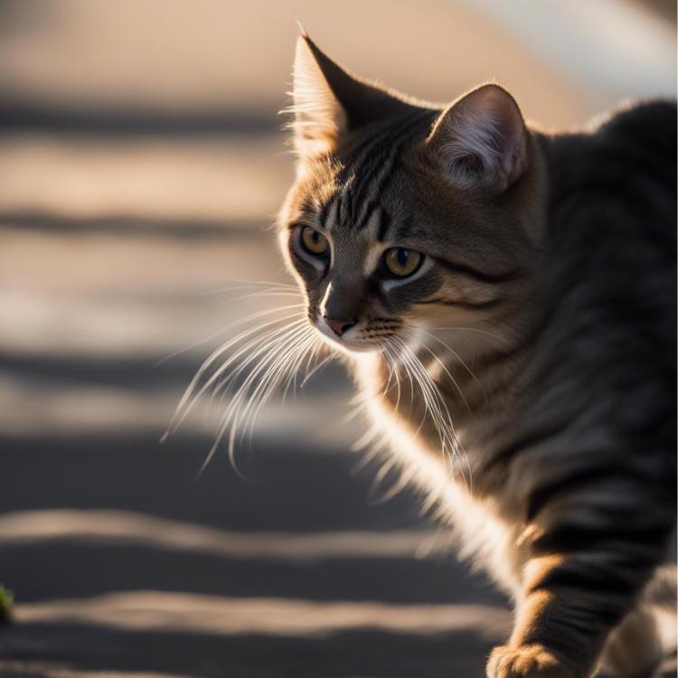

FurryTails|Is Your Cat Overweight? Top Strategies and Practical Tips to Boost Their Activity

When you notice that your cat is overweight, increasing their activity level is crucial. Obesity can have multiple adverse effects on your cat’s health, including a higher risk of arthritis, skin diseases, kidney issues, and diabetes, and it could even be life-threatening. How can you determine if your cat is overweight and effectively manage their weight? This article will help you understand your cat’s ideal weight and provide practical tips for weight management.
How to Determine Your Cat’s Weight?
- Feel the Ribs: You should be able to feel the ribs lightly but not see them easily.
- Waist Shape: From above, your cat’s waist should have a slight curve, not a flat appearance.
- Waist Curve: From the side, you should see a curve from the waist to the abdomen.
- Walking Condition: When walking, your cat’s belly shouldn’t sag or sway, indicating stable body balance.
Even if the weight is within the normal range, if your cat’s body appears rounded or the belly protrudes, it might indicate an obesity issue. Observing your cat’s body shape can give you a more accurate assessment of their health.
Cat Weight Management Tips
- Control Diet: Adjust your cat’s food intake to avoid overeating. Choose treats with natural ingredients and avoid foods high in sugar.
- Increase Activity: Provide ample play and exercise opportunities, such as cat toys or a cat tree. This promotes exercise and helps burn calories.
- Regular Health Checks: Have your cat’s health checked at least once a year, including weight, teeth, and coat condition.
- Avoid Human Food: Don’t let your cat eat human food high in sugar and salt.
- Choose the Right Cat Food: Opt for cat food that is low in carbohydrates and nutritionally balanced, and choose products suitable for your cat’s age.
Ways to Increase Your Cat’s Activity Level
Provide a Variety of Toys
- Wand Toys: Capture your cat’s attention and stimulate their hunting instincts.
- Animal-Shaped Toys: Such as mice or birds, encourage chasing and pouncing.
Automated Toys: Such as moving laser pointers or spinning balls, keep your cat engaged.
- Cat Trees: Offer multiple levels for climbing and observing, satisfying their exploratory instincts.
- Cat Platforms: Design multi-level and multifunctional platforms to provide jumping and climbing opportunities.
Regularly Rotate Toys and Facilities
- Toy Rotation: Frequently change or rearrange your cat’s toys to maintain their interest.
- Update Facilities: Add new cat platforms or trees to keep things fresh.
Ensure Safety
- Safe Environment: Make sure the play area is safe, avoiding small items or unstable structures.
- Monitor Activity: Watch your cat’s activity to prevent injuries from overplaying.
Create Social Opportunities
- Interact with Other Cats: If possible, consider having multiple cats to encourage interaction and play.
Tips for Choosing a Cat Tree
- Size: Choose a cat tree that is at least 160 cm tall to provide ample exercise space.
- Material: Wooden cat trees are durable but more expensive; plush cat trees are attractive but harder to clean; corrugated cardboard is cheap but wears out quickly.
- Cat’s Age: For active cats, select a sturdy cat tree; for older cats, choose a tiered tree to reduce the jumping burden.
Product Recommendations for Enhancing Your Cat’s Activity
To help your cat achieve a healthier weight and stay engaged, consider investing in high-quality products. Below are two excellent options from Amazon that can support your cat’s well-being. Please note that the links provided may be part of affiliate marketing programs, which means we may earn a small commission (at no additional cost to you) if you make a purchase through them. Your support helps us maintain our website operations.
Amazon Basics Cat Tower with Hammock and Scratching Posts for Indoor Cats
The Amazon Basics Cat Tower is a fantastic addition to any indoor cat’s environment. This beige tower is designed to encourage climbing and scratching while providing a cozy spot for naptime. It features:
- 2 Sturdy Scratching Posts: Made with natural jute fiber, these posts offer the ideal texture for cats to sharpen their claws and maintain healthy nails.
- Plush Suspended Hammock: A comfortable place for your cat to relax and nap.
- Secure Base: Ensures stability while your cat plays.
Replaceable Dangling Soft Ball Toy: Provides added entertainment and engagement.
This tower helps redirect your cat’s scratching behavior away from household furniture and carpets. It’s easy to assemble and compact, measuring 15.8 x 15.8 x 19.7 inches. You can check it out Here.
Cat Scratcher Cardboard
If you’re looking for a durable and effective scratching solution, the Cat Scratcher Cardboard is a great choice. Its unique design mimics tree bark, making it highly appealing to cats. Features include:
- Premium Scratching Textures: Provides a more satisfying scratching experience and is 50% more durable than standard scratchers.
- Durable & Natural Material: Made from heavy-duty corrugated cardboard and 100% recycled materials, it’s safe, non-toxic, and built to last.
- Reversible Design: Allows for extended use by offering two scratching surfaces.
- Size and Warranty: Measures 15.7 x 7.7 x 2 inches and comes with a 6-month warranty, ensuring peace of mind with your purchase.
This scratcher helps satisfy your cat’s natural scratching instincts, saving your furniture and carpets from damage. It’s an excellent option for keeping your cat’s claws healthy and offering a place for them to release stress. You can find it Here.
These products can significantly enhance your cat’s environment, promote their well-being, and aid in effective weight management.
Want to gain a deeper understanding of cat behavior and how to care for them? Click the link below to read more related articles. read more related articles
Looking for products for your cat or dog? Check out the articles linked below for more information and recommendations. Explore more articles